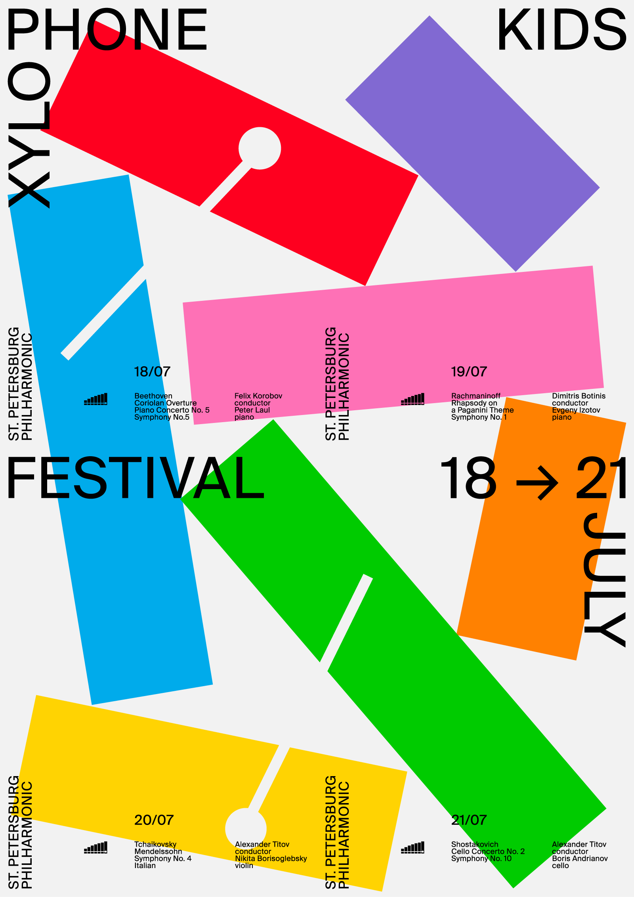
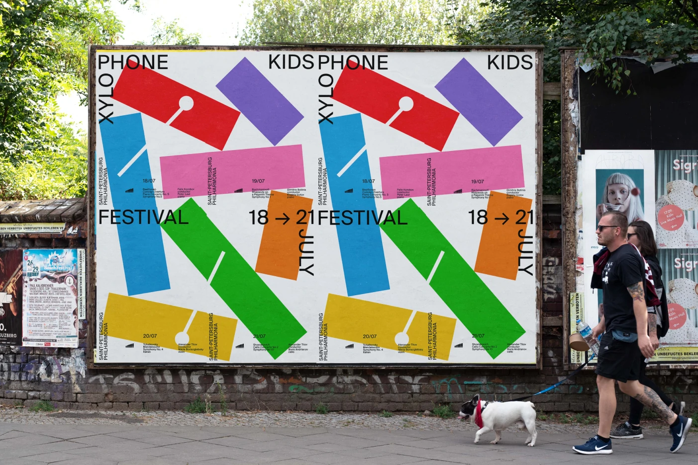
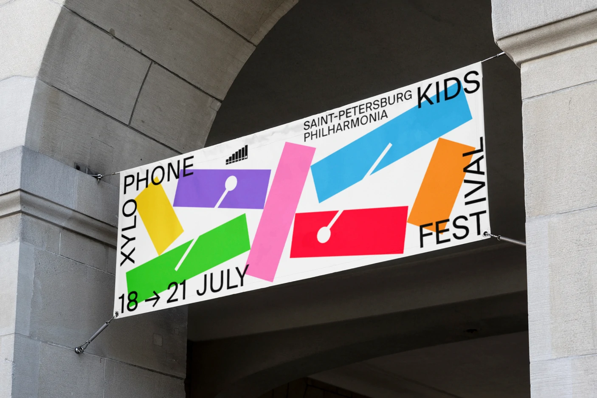
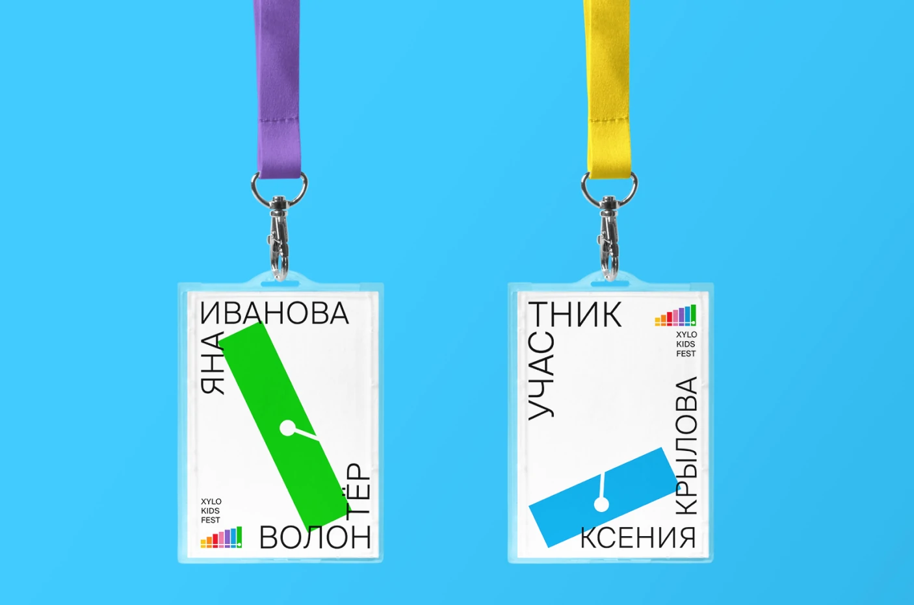

kids festival
An identity design for the children’s festival of classical music. The idea came from the xylophone, which children love to play with. This instrument inspired me to create a simple and bright identity to attract a young audience.



